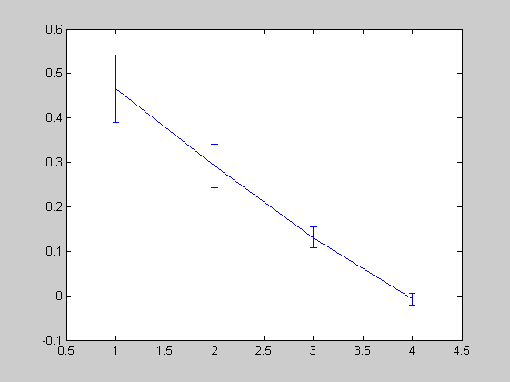
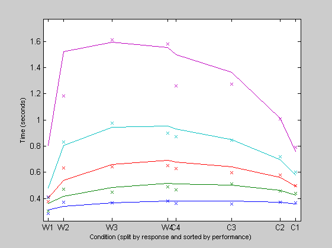

The DMAT Manual
This Manual accompanies the Diffusion Model Analysis Toolbox for MATLAB. Its goal is to introduce the use of this toolbox, and to permit users to apply diffusion model analyses on their own data.
Contents
A DMAT Primer is to appear in Behavior Research Methods in 2007:
Vandekerckhove, J. & Tuerlinckx, F. (in press). Diffusion Model Analysis with MATLAB: a DMAT primer. _Behavior Research Methods._
Diffusion Model Analysis
Diffusion models are a class of stochastic time-series models that are continuous in both time and state space. If a diffusion model is equipped with features such as a drift rate towards one or the other side of the state space, and absorbing boundaries at both ends of the state space, this process can output two interesting random variables: The boundary reached and the time elapsed before reaching it. As such, the output of a diffusion process resembles the type of data often recovered from experiments in psychology: one binary variable (e.g., correct or false) and one response time.
Comparing parameters of the diffusion model has been a succesful data-analysis strategy in different contexts. For more information regarding diffusion model analysis, please see the accompanying article, for which you can find the reference by calling the function dmatref.
Vandekerckhove, J. & Tuerlinckx, F. (2007). _Fitting the Ratcliff Diffusion Model to experimental data._ Manuscript submitted for publication.
or visit our website, for which you can find the URL by calling dmatsite:
http://ppw.kuleuven.be/okp/dmatoolbox/
Types of parameter sets
Throughout the toolbox, parameters are captured in three different types of matrices, only one of which the end user is likely to encounter. This common parameter matrix contains seven or nine model parameters (columns) for each condition in an experiment (rows):
a Ter eta z sz st v (pi) (gamma)
Cond1
...
CondNThe function standardparset will return some standard parameter sets in this format, for example:
>> parameters = standardparset(5)
parameters =
0.1600 0.3000 0.0800 0.0800 0.1000 0.1000 0.3000
0.1600 0.3000 0.0800 0.0800 0.1000 0.1000 0.2000
0.1600 0.3000 0.0800 0.0800 0.1000 0.1000 0.1000
0.1600 0.3000 0.0800 0.0800 0.1000 0.1000 0
Other parameter sets, used internally, are the single-condition parameter vector (model parameters for just one condition, or one row of the parameter matrix) and the design vector, containing only the free parameters of the current model.
Types of data sets
DMAT makes use of many different data representations. However, most end users will use at most two of these, namely the N-by-3 and N-by-2 data sets. Such data sets are simply matrices with N rows (where N refers to the number of trials in the experiment), and two or three columns. In the last column, these matrices contain the response times for each trial (in seconds). In the second to last column, they contain an accuracy score for this trial (a 0 or 1). Then, if there are three columns, the first column contains an index that refers to the experimental condition in which this trial was performed. If there are only two columns, all trials will be assumed by DMAT to be in the same condition.
DMAT contains functions to generate data in this format. For example, multisimul:
>> data = multisimul(parameters,[250 250 250 250],1); >> whos data
Name Size Bytes Class data 1000x3 24000 double array Grand total is 3000 elements using 24000 bytes
>> data(1:10,:)
ans =
2.0000 0 0.4854
4.0000 1.0000 0.4564
4.0000 0 1.0976
4.0000 0 0.3805
2.0000 1.0000 1.3340
4.0000 1.0000 0.5544
2.0000 0 0.4196
2.0000 1.0000 0.3758
1.0000 1.0000 0.4711
4.0000 0 1.4761
The variable data now has three columns. The first column contains numbers from 1 to 4 (indicating conditions), the second column contains zeros and ones (containing accuracy) and the third column contains real numbers that are strictly positive, right-skewed, and with values typically less than or around 1. That is what a standard data set should look like. In total, data contains 1,000 rows: 250 for each of the four conditions in the parameter matrix parameters (this is of course an amount of data that is rarely realistic, but it will allow the estimation algorithm to converge faster for the demonstration).
There exist two more types of data sets, used mostly (but not strictly) internally. One type is a cell matrix that has as many cells as there are conditions, and in each cell there is the N-by-2 data matrix for that condition. Such cell data sets are produced by the function splitdata:
>> dcel = splitdata(data)
dcel =
[250x2 double]
[250x2 double]
[250x2 double]
[250x2 double]
The fourth and last data representation contains only certain summary statistics for all conditions. It is another cell matrix, with as many cells as there are conditions. In each cell there is another cell matrix with eight elements: (1) bin edges for "1" responses, (2) bin edges for "0" responses, (3) observed frequencies for "1" responses, (4) observed frequencies for "0" responses, (5) total number of "1" responses, (6) total number of "0" responses, (7) total number of observations, (8) a vector with the lowest and highest response times in the present condition. Each such cell can be produced by the function processdata:
>> dcel2 = processdata(dcel{1})dcel2 =
[1x5 double]
[1x5 double]
[1x6 double]
[]
[ 245]
[ 5]
[ 250]
[1x2 double]
The function loaddmatdata can access files of different types and will return an N-by-3 data set.
Descriptive statistics
Before parameter estimation starts, it may be informative to investigate some descriptive statistics. DMAT contains a function (descriptives) that does just that.
Parameter estimation with DMAT
The main function of DMAT, however, is to allow parameter estimation. This is done with the function multiestv4 (we keep the unelegant name to keep track of different versions). The simplest possible call to multiestv4 is simply multiestv4(data). This will work and return an output structure into the system variable ans. It will use a set of standard options for the estimation.
However, DMAT can give a lot of control over the estimation process to the user. You can do this by supplying an options structure as the second input argument.
The OPTIONS structure
The main feature of DMAT is the options structure that you can pass to the estimation routine. This structure can contain any of a number of different fields, which impact the functionality in different ways. We will briefly discuss the effects of each field, but in practice you can leave these fields out of the structure (do not include empty fields unless you have reason to do so: only missing fields will be replaced with default values). In practice, there are only a few fields you should be changing regularly, in the overwhelming majority of cases, the default values for most fields will suffice.
The function multiestv4 serves a double role, also providing the default options structure. You can access it by calling multiestv4 with no input arguments:
>> defopts = multiestv4
defopts =
DesignMatrix: {'1' '1' '1' '1' '1' '1' '1'}
Display: 'off'
EWMA: [1x1 struct]
EstimationMethodScalar: 5
FixedBinEdges: [2x5 double]
FixedValues: []
FitBnotZ: 0
Guess: []
GuessMethodScalar: 1
LongSimplexRuns: 1
MaxIter: 5000
Name: 'No name given'
NoFitting: 0
NonparametricBootstrap: 0
ObjectiveDecimals: 7
OutlierMax: []
OutlierMin: []
OutlierTreatment: 'None'
ParameterDecimals: 7
ParametricBootstrap: 0
Percentiles: [2x5 double]
ShortSimplexRuns: 3
SpecificBias: []
DesignMatrix: This is one of the fields you will be changing a lot. This field should contain a 1-by-7 or 1-by-9 cell matrix, with each element a design matrix for a certain diffusion model parameter (the order is, as always, [a Ter eta z sz st v (pi) (gamma)]. These design matrices allow for imposing substantial restrictions on parameters. For example, if you have 4 conditions, and have reason to expect that drift rate v is identical across conditions, then the second element of this cell matrix should be a column of 4 ones. If, on the other hand, you expect it to differ between conditions 1-2 on the one side and 3-4 on the other, the second element should be a matrix with two colums like this one:
1 0
1 0
0 1
0 1
If you expect there to be a linear pattern, you could build a design matrix that has one column for a linear intercept and one column for a linear slope. The function orthpoly can be useful in building (small) design matrices with linear effects, for example:
>> orthpoly(4,0:1)
ans =
1 -3
1 -1
1 1
1 3
If you expect all values to be completely different, and know no pattern in which to capture the differences, an identity matrix could be provided.
Two short-cuts have been built into this functionality. If a design matrix is the empty matrix, DMAT will interpret this as an identity matrix of the appropriate size (i.e., no restrictions on the design). If a design matrix is the string '1', this will be interpreted as a column of ones (a no-effects design).
For details on how to use design matrices, please see the accompanying article. For the demonstration, let's assume that all parameters except drift rate v are constant across conditions (because in the data we simulated, they are). The following complicated statement builds a cell matrix with seven elements, the first six of which are columns of ones and the seventh of which is the identity matrix.
>> desmat = [repmat({orthpoly(4,0)},1,6) {orthpoly(4,4)}]desmat =
Columns 1 through 4
[4x1 double] [4x1 double] [4x1 double] [4x1 double]
Columns 5 through 7
[4x1 double] [4x1 double] [4x4 double]
The default value for this field is No effects: all parameters are constrained to be equal across conditions. This default design matrix can be produced with the command repmat({'1'},1,7).
Display: This field works just like the 'Display' field in the Optimization Toolbox, where it controls the output sent to the screen by optimization routines. Its possible values are: 'off' (no output), 'iter' (output at each iteration), 'final' (just final output), and 'notify' (output only if some function doesn't converge).
Its default value is 'off'.
EWMA: In the article cited above, we describe a method for identifying fast guesses on the basis of accuracy and response time data. This so-called Exponentially Weighted Moving Average Method uses three parameters that you can set by placing a structure in the field EWMA. This structure should have three fields labeled l, containing the lambda parameter, L, with the width of the control limits, and s, the in-control standard deviation. The interpretation and use of these parameters are explained in the article.
Default values are:
l: 0.0100
L: 1.5000
s: 0.5000
EstimationMethodScalar: This field controls important aspects of the estimation routine, namely the objective function to use (Multinomial Likelihood or Chi-Square) and whether or not to use data-dependent bin edges.
The field has only six possible values, all other values will result in errors. The effects are in a table that you can call with emstable:
>> emstable
EMSTABLE
Value Objective Bin edges
2 Chi^2 Default values
3 Chi^2 User-supplied percentiles
4 Chi^2 User-supplied bin edges
5 ML Default values
6 ML User-supplied percentiles
7 ML User-supplied bin edges
The default setting is 5.
FixedBinEdges: If you specified that bin edges should be determined with user-defined bin edges (with EstimationMethodScalar), this field should contain them in a 2-by-numberOfEdges matrix, where the first row contains the percentiles for the response=0 distribution and the second row contains those for the response=1 distribution.
Default (in seconds):
0.3000 0.3600 0.4200 0.5200 0.8000
0.3800 0.4700 0.5600 0.7000 1.0000
FixedValues: A matrix of fixed values. It should be either empty, in which case nothing happens, or it should be of the same size as the parameter set (conditions-by-parameters). If it is not empty, it should contain values at the locations of parameters that you want to keep fixed and NaN-values for parameters that you want to estimate. For example, if we want to assume that the starting point z and the nondecision time Ter do not vary across trials (i.e., all st = sz = 0), this field could contain:
>> fixvals = [NaN(4,4) zeros(4,2) NaN(4,1)]
fixvals = NaN NaN NaN NaN 0 0 NaN NaN NaN NaN NaN 0 0 NaN NaN NaN NaN NaN 0 0 NaN NaN NaN NaN NaN 0 0 NaN
The default is of course an empty matrix.
Note that if the restrictions imposed by this functionality conflict with those imposed by the design matrices, design matrices take preference. So if we want to keep the above values fixed, we need to clear the design matrices for these parameters (e.g., by invoking a command like desmat([5 6]) = {[]};, but let's not do that for this demonstration).
Guess: An initial guess supplied by the user. It should be either empty, in which case a guess is generated on the basis of the EZDIFF algorithm, or it should be a matrix of the same size as the parameter set (conditions-by-parameters).
GuessMethodScalar: A scalar determining the method of selecting initial guesses. A value of 1 will cause the EZDIFF algorithm to be used, a value of 2 will do the same but will slightly perturb the initial guess. (Not a very useful option, really.)
The default is 1.
LongSimplexRuns: The number of long simplex runs. At the heart of the optimization routine is the Nelder-Mead Simplex algorithm. It is restarted several times, performing a number of short runs (250 iterations) and a number of long runs (user selects number of iterations). This field contains a scalar controlling the number of long simplex runs.
The default is 1.
MaxIter: The maximal number of iterations in a long simplex run (see LongSimplexRuns).
The default is 5,000.
Name: Whenever you create a model, give it a name. This is used in creating output and displaying progress, and is useful for yourself for keeping track.
The default is 'No name given'.
>> name = 'Demonstration Model';
NonparametricBootstrap: The number of nonparametric bootstrap iterations of the model.
The default is 0.
Note that you can choose between parametric or nonparametric bootstrap runs, but you can't do both in one run, so either this field or ParametricBootstrap should contain a 0 (or be left out altogether).
ObjectiveDecimals: The number of significant digits in the objective function to look for.
The default is 7.
OutlierMax and OutlierMin: If you have chosen an outlier treatment based on cut-offs in absolute values or z-scores, these fields contain the minimum and maximum values to be kept.
The default is empty.
OutlierTreatment: The DMAT provides several possible outlier treatment methods. This field controls these methods. All the inputs are strings, and in all cases does the first letter suffice.
Value Effect
EWMA Applies EWMA method
Mixed Model Applies the adaptive mixed model
Both Applies both the above
Absolute cut-off Censors below X seconds and above Y seconds*
Relative cut-off Censors below X and above Y stds from the mean*
None Nothing
* Where X is in .OutlierMin and Y is in .OutlierMaxThe default is 'None'.
ParameterDecimals: The number of significant digits in the parameters to look for.
The default is 7.
ParametricBootstrap: The number of parametric bootstrap iterations of the model. (See note at NonparametricBootstrap.)
The default is 0.
Percentiles: If you specified that the bin edges should be determined with user-defi ned percentiles (with EstimationMethodScalar), this field should contain them in a 2-by-numberOfEdges matrix, where the first row contains the percentiles for the response=0 distribution and the second row contains those for the response=1 distribution.
Default:
10 30 50 70 90
10 30 50 70 90
ShortSimplexRuns: The number of short simplex runs. This field contains a scalar controlling the number of short simplex runs (with 250 iterations). See LongSimplexRuns.
The default is 3.
SpecificBias: This field controls the relative values of starting points z to boundary separations a (their ratio z : a is sometimes called the bias). The field should contain a vector that is either empty, or has length equal to the number of conditions. Each element should then contain the bias (z : a) for that condition.
The default is empty.
Note that if the restrictions imposed by this functionality conflict with those imposed by the design matrices or fixed values, design matrices or fixed values take preference.
We can now build an options structure for the demonstration. For the demonstration, we'll include a design matrix that is suitable (no effect on any parameters except drift rate v), and we'll apply the EWMA outlier treatment.
options = struct('DesignMatrix',{desmat},...
'Name',name,...
'OutlierTreatment','EWMA')options =
DesignMatrix: {1x7 cell}
Name: 'Demonstration Model'
OutlierTreatment: 'EWMA'
Note that the order of the fields doesn't matter, but capitalization does. Also, for programming reasons, the DesignMatrix field should be a single cell, so you have to capture the desmat variable in curly brackets ({}) while including it.
The OUTPUT structure
The result of a DMAT run with the multiestv4 function is an output structure:
>> output = multiestv4(data,options)
Guess : 4326.61172382 (11-Apr-2007 12:08:23)
Simplex 1: 3889.56285212 (11-Apr-2007 12:08:25)
Simplex 2: 3885.93591576 (11-Apr-2007 12:08:26)
Simplex 3: 3883.70721213 (11-Apr-2007 12:08:27)
Simplex 4: 3883.26469949 (11-Apr-2007 12:08:40)
Final loss: 3883.26469949 (11-Apr-2007 12:08:42)
output =
DesignVector: [10x1 double]
Df: 10
FitInfo: [1x1 struct]
Fitvalue: 3.8833e+003
Hessian: [10x10 double]
Minimum: [4x7 double]
Name: 'Demonstration Model'
NonparametricBootstrapMean: []
NonparametricBootstrapStdErr: []
NonparametricBootstraps: []
Options: [1x1 struct]
OutlierReport: [1x1 struct]
ParametricBootstrapMean: []
ParametricBootstrapStdErr: []
ParametricBootstraps: []
Simplex: [1x4 struct]
StdErr: [4x7 double]
Time: 19.0160
Warnings: {'No warnings.'}
This structure again contains many fields, each of which has a specific use:
Fitvalue: The minimum value of the objective found:
output.Fitvalue = 3.8833e+003
Minimum: The location of the minimum, expressed in a full parameter matrix:
output.Minimum =
0.1911 0.3137 0.1585 0.0949 0.1546 0.1241 0.4659
0.1911 0.3137 0.1585 0.0949 0.1546 0.1241 0.2913
0.1911 0.3137 0.1585 0.0949 0.1546 0.1241 0.1307
0.1911 0.3137 0.1585 0.0949 0.1546 0.1241 -0.0076
DesignVector: The location of the minimum, expressed in a design vector. This vector indicates the location of the minimum in the parameter space as it was used internally, with only directly estimated parameters. Since in this example, we have four conditions and our design was: {'1','1','1','1','1','1',[]} (no effects on any parameters except drift rate v), this parameter space will have 10 dimensions. The first dimension refers to the the boundary separations a*, the second to the mean nondecision times Ter*, etc., while the seventh refers to the drift rate in the first condition, v1, and the tenth refers to the drift rate in the last condition, v4. As you can tell, the interpretation of these parameters strongly depends on the model you formulated.
output.DesignVector =
0.1911
0.3137
0.1585
0.0949
0.1546
0.1241
0.4659
0.2913
0.1307
-0.0076
To help you keep track of the design, the function namepars will identify each of the free parameters in the design:
>> namepars(output)
Parameter list:
1: a(1) 0.191079
2: Ter(1) 0.313687
3: eta(1) 0.158509
4: z(1) 0.094888
5: sZ(1) 0.154623
6: st(1) 0.124067
7: v(1) 0.465885
8: v(2) 0.291345
9: v(3) 0.130715
10: v(4) -0.007605
In this list, the index given to each parameter refers to the column of the design matrix to which it pertains.
Hessian: The Hessian matrix at the minimum. Note that this is the Hessian matrix in the parameter space spanned by the design vector, i.e., only the free parameters of the model. So since you have, in this example, four conditions and our design is: {{'1'}{'1'}{'1'}{'1'}{'1'}{'1'}{[]}} (no effects on any parameters except drift rate v), this parameter space will have 10 dimensions, and the Hessian is a 10x10 matrix, where the first row and column pertain to the mean boundary separation a*, the second to the mean nondecision time Ter*, etc., while the seventh refers to the drift rate in the first condition, v1, and the tenth refers to the drift rate in the last condition, v4.
StdErr: Estimates of the standard error of estimation of the parameters (expressed in the format of a full parameter matrix) calculated with the delta method.
output.StdErr =
0.0163 0.0139 0.0427 0.0085 0.0272 0.0206 0.0751
0.0163 0.0139 0.0427 0.0085 0.0272 0.0206 0.0492
0.0163 0.0139 0.0427 0.0085 0.0272 0.0206 0.0239
0.0163 0.0139 0.0427 0.0085 0.0272 0.0206 0.0136
Time: The amount of time spent on the parameter estimation (in seconds).
output.Time = 19.0160
Simplex: An array of output structures, provided by the Optimization Toolbox's fminsearch function, containing diagnostics for each run of the Nelder-Mead simplex algorithm. This structure contains four fields:
iterations: 1702
funcCount: 2387
algorithm: 'Nelder-Mead simplex direct search'
message: [1x196 char]
.iterations shows for how many iterations each run lasted (in this case, the last run is shown). .funcCount indicates the number of times the objective function was evaluated, .algorithm identifies the used algorithm and .message contains the output message of the algorithm.
The objective function was evaluated this many times:
>> sum([output(end).Simplex.funcCount])
ans =
3261
OutlierReport: A structure containing information about the outlier treatment. It contains seven fields:
cutoff: 0.2804
used: [100 99.6000 99.6000 100]
use: [1000x1 logical]
EWMA: [1x1 struct]
EWMAplot: [1x1 struct]
OutlierMax: []
OutlierMin: []
.cutoff contains the cut-off value that was determined by the EWMA algorithm, if any. .used contains the percentage of data points that was retained, per condition. .use is a logical vector that indicates for each trial whether it was retained (true) or not (false). .EWMA is a copy of the field in the Options structure where EWMA parameters are stored. .EWMAplot contains information on the EWMA procedure that allows another function (plotewma) to construct an EWMA control chart, like this:
>> plotewma(output.OutlierReport.EWMAplot)

Finally, the fields .OutlierMax and .OutlierMin are again copies from the Options structure.
Warnings: A list of warnings that occured during the operation of the program, if any.
Name: The name you gave to this model.
Options: A copy of the Options structure that you provided (with some extra fields, used internally). Some of these extra fields might be interesting to end users as well.
.yQ and .nQ provide the bin edges that were used in the calculation of the objective (for response=1 and response=0, respectively). .objecfun is a handle to the objective function used: it accepts a design vector as input and provides a fit value (deviance statistic) as output. .retrys contains the number of 'jumps' that were made by the optimization algorithm. Finally, and most importantly, the .controls structure contains information about the model design, as it was used internally.
Df: The number of degrees of freedom in this model (i.e., the number of parameters that were directly estimated).
output.Df =
10
ParametricBootstraps and NonparametricBootstraps: An array of output structures, one for each bootstrap iteration.
ParametricBootstrapStdErr and NonparametricBootstrapStdErr: The standard deviation of all recovered minima through bootstrap.
ParametricBootstrapMean and NonparametricBootstrapMean: The mean of all recovered minima through bootstrap.
Submitting queues
Often, users will be interested in estimating more than one model. In fact, comparisons between models are what diffusion model analyses are about! To allow for this, DMAT is equipped with functions that allow you to submit a series of different models at once. That way, you could submit a long series of models to your MATLAB program, and leave it running without having to interfere. You could submit a 'queue' of models before your coffee break or before you leave the office.
Defining a queue is relatively easy: a queue is simply an array of valid options structures, just like the ones discussed above. So, if we would like to investigate the significance of the effect of condition on drift rate v, we could construct a queue of two models, one in which there is no room for the effect (the nil model) and one in which there is (the model used above). The nil model, of course, is the default, so defining this queue is very easy:
>> queue = [multiestv4 options];
This works, because the command multiestv4, without input, returns the default options structure.
To submit it, there is a specific function, runqueue, but the main function multiestv4 will recognize a queue when you submit an array of structures, and will automatically invoke runqueue. The output will be an array of output structures.
Note that the functions that process queues use information from the previous model to find a good starting point for the next. Since models with more free parameters need that extra help more, it is useful to construct queues in such a way that simple models are estimated first.
Visualizing output
Of course, at some point you'll want to produce graphical output to summarize findings. DMAT provides several tools for visualizing output. Informartion about each of these is available through their respective help-functions:
edfcdf - Plot cumulative distributions of reaction time
fitlast - Calculate the fit of any given parameter set to the
last model
modelfittable - Table with model properties
outputtoxls - Export DMAT output to structured Excel spreadsheet
paramplot - Plot parameters over conditions
plotparreg - Plot deviance function around one or two given
parameters
qpplot - Quantile probability plots
qtable - Shows concise summary of an output queue
waldtable - Some statistics regarding the individual parametersRT distributions: The function edfcdf can not only show empirical distributions of RT, but also overlay the theoretical CDF if you provide the parameter estimates.
When you use this function, you can provide the bin edges which were used by DMAT (these are then shown as reference lines in the plot). The bin edge which were used can be retrieved from the output.Options structure: bin edges for the X=1 trials are in the field output.Options.yQ, and those for the X=0 trials are in output.Options.nQ.
>> cond = 2; % choose a condition to plot (1 through 4) >> rep = 1; % and a response (0 or 1) >> rts = data(data(:,1)==cond&data(:,2)==cond,3); % select the RTs from that condition, with that response >> N = sum(data(:,1)==cond); % number of trials in that condition >> edfcdf(rts,N,rep,output.Minimum(cond,:),output.Options.yQ(cond,:))

Parameter space: The function fitlast provides the value of the objective function at an arbitrary point in the parameter space. For example, the fit value of the simulation parameters (called badness of data) can be obtained through:
>> bod=fitlast(param,output)
bod = 3.8974e+003
Also, the function plotparreg can plot the parameter space in two or three dimensions (but this can take a lot of time). plotparreg is slightly more difficult to use, because you have to provide it with the index of the parameter(s) in function of which you want to plot in the design vector. Recall that in our example, with the first six parameters constrained to be equal and the last to vary over four conditions, there were 10 free parameters. Parameter 1 was the boundary separation for all conditions, Parameter 2 the mean nondecision time, etc. Parameters 7 through 10 were drift rates. An example call to plotparreg to plot the parameter space over Ter would thus be:
>> plotparreg(output,2)
Parameter 2 is Ter(1): 0.31369.

The red circle indicates the point estimate of the parameter. Usually, these functions are nicely convex (at this scale).
Model properties: Some information about the fit of the model can be obtained with the modelfittable function:
>> modelfittable(output)
Model Deviance Df AICc BIC LR
1 Demonstration Model 3883.2647 10 3903.4876 3952.3222 41.9291
Exporting output: If you want a summary of a DMAT run, you can request an Excel file (if you have MS Excel...) with the funcion outputtoxls.
Parameter plots: Visualize parameters across conditions, including their standard errors of estimation, with the paramplot function. For example, the drift rate v (which is the seventh parameter):
>> paramplot(output.Minimum(:,7),output.StdErr(:,7))
Quantile probability plots: A type of plot that is specific to two-choice reaction time data is the quantile probability plot. You can construct it with the qpplot command. Note that this function requires that the inverse CDF of the diffusion model be found, which can be time-consuming (i.e., this graph may take a minute or so to render, and much longer if there are many conditions).
>> percentiles = [10 30 50 70 90]; >> qpplot(data,percentiles,output.Minimum)
Queue summary: When you've requested DMAT to run a series of models, rather than just one, a summary table to quickly compare these models can be obtained with the qtable function. The tables will look like this (but with more rows, without NaN):
>> qtable(output)
-----------------------------------------------------------------------
Deviance d-Deviance df d-df AICc BIC p
-----------------------------------------------------------------------
3883.2647 NaN 10 NaN 3903.4876 3952.3222 NaN
-----------------------------------------------------------------------
This table provides the deviance value for each model, the difference in deviance, and the statistical significance of that deviance, given the number of added parameters.
Author of this file
Joachim Vandekerckhove (joachim.vandekerckhove@psy.kuleuven.be) Part of the DMA Toolbox. Please read the End User License Agreement, contained in 'dmateula.txt' or by invoking the DMATLICENSE command. See also http://ppw.kuleuven.be/okp/dmatoolbox.
Published with MATLAB® 7.2, M2HTML, and the DMA Toolbox